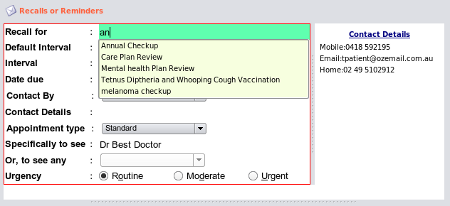

|  |
- Clicking the new button, will clear the editing area. You should type in the first few letter of the recall or reminder name - If it
exists in the database a list will popup.
- use the down arrows to scroll down onto the list, resist the tempation to stop and pickup your mouse and click, as this will really slow down your data entry. Hit the enter key when over the item on the list.
|